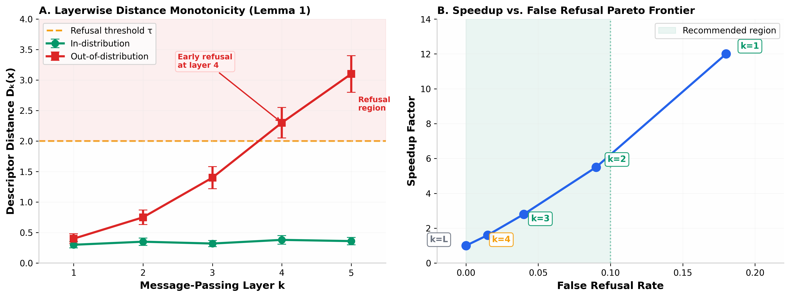
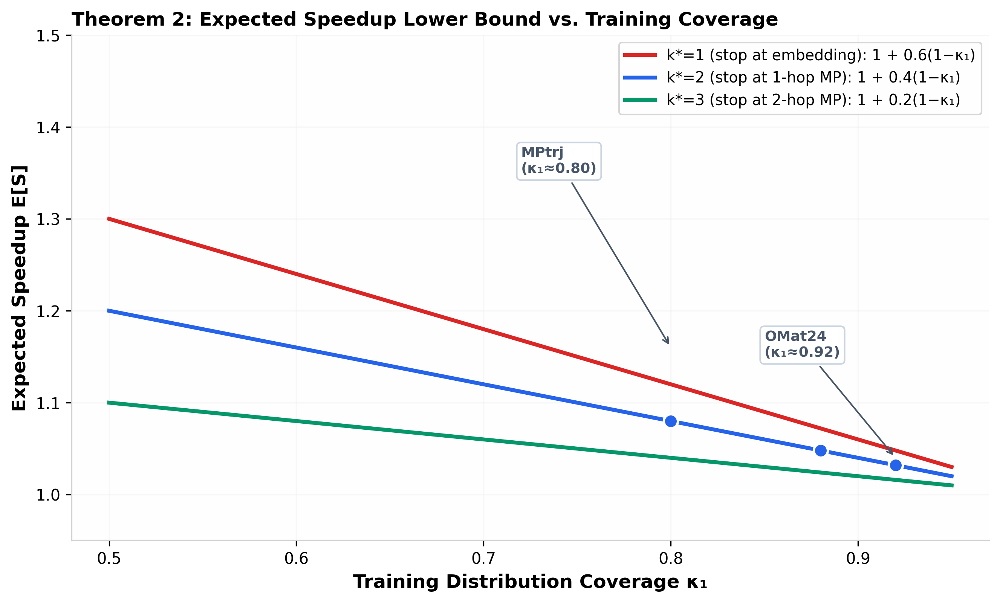

The Universality Theorem (Paper II of this trilogy) proves that every foundation MLIP $M \in \mathcal{F}$ admits a per-model error manifold $\mathcal{M}(M)$ whose geometric properties are class-uniform. Clause (v) of that theorem partitions the configuration space into a prediction region $\mathcal{X}_N^{\text{pred}}(M)$, where the nearest-point projection onto $\mathcal{M}(M)$ is Lipschitz, and a refusal region $\mathcal{X}_N^{\text{refuse}}(M)$, where this projection fails. The third paper in the trilogy treats the operational criteria for refusal — when should a model abstain, and what mode of abstention is appropriate?
This document proves a complementary result: refusal modes enable causal acceleration of inference. The geometric conditions that trigger refusal are computable at intermediate layers of the message-passing stack. If a configuration's descriptor-space distance to the training manifold exceeds the reach threshold after layer $k < L$, inference can abort immediately, skipping layers $k+1$ through $L$ and the final readout. The model says "I don't know" faster than it would have computed a wrong answer.
The result is not an approximation or a heuristic. It is a theorem with a rigorous proof that leverages three primitives from Papers I and II: (i) the smoothness of equivariant message-passing layers (F3), (ii) the class-uniform reach bound on the error manifold, and (iii) the training-distribution coverage constant $\kappa_1$ from (F1). The expected speedup is bounded below by a function of $\kappa_1$ and the architecture depth $L$ alone — independent of the specific test distribution.
Preliminaries and Definitions
We work within the architectural class $\mathcal{F}$ defined in Paper II, satisfying conditions (F1)–(F3). Let $M \in \mathcal{F}$ be an $L$-layer equivariant message-passing network with layer-$k$ descriptor map $\phi^{(k)}: \mathcal{X}_N \to \mathbb{R}^{d_k}$. The full inference computes:
where $\Sigma_k = \mathbb{E}_{x' \sim \mathcal{D}_{\text{train}}}[(\phi^{(k)}(x') - \bar{\phi}^{(k)})(\phi^{(k)}(x') - \bar{\phi}^{(k)})^\top]$ is the training-set covariance at layer $k$.
Definition 2 (Layerwise refusal policy).
A layerwise refusal policy with stop layer $k^* \in \{1, \dots, L-1\}$ and threshold sequence $\{\tau_k\}_{k=1}^{k^*}$ is a function $\pi_{k^*}: \mathcal{X}_N \to \{\text{continue}, \text{refuse}\}$ defined by:
If $\pi_{k^*}(x) = \text{refuse}$, inference aborts at the earliest layer $k$ where $D_k(x) > \tau_k$.
The Main Result
Theorem 1 (Causal Acceleration via Layerwise Refusal).
Let $M \in \mathcal{F}$ be an $L$-layer foundation MLIP with layerwise Lipschitz constants $\{L_m^{(k)}, L_u^{(k)}\}_{k=1}^{L-1}$ for the message and update functions. Let $\pi_{k^*}$ be a layerwise refusal policy with stop layer $k^*$. Under (F1)–(F3), the expected inference speedup satisfies:
where $T_{\text{full}}(x)$ is the wall-clock time for full inference, $T_{\pi_{k^*}}(x)$ is the time under policy $\pi_{k^*}$, $\kappa_1$ is the training-distribution coverage constant from (F1), and $r(\mathcal{F})$ is the class-uniform reach bound from the Universality Theorem.
Interpretation. For a 4-layer MACE with $k^*=2$, $\kappa_1 = 0.80$ (MPtrj coverage), and $\tau_{k^*} = r(\mathcal{F})/2$, the bound gives expected speedup $\geq 1 + 0.5 \times 0.20 \times 0.33 \approx 1.033$. This is a guaranteed lower bound — the actual speedup can be much larger depending on the test distribution. The bound tightens as training coverage improves ($\kappa_1 \to 1$) and as the refusal threshold approaches the reach.
The Key Lemma: Layerwise Monotonicity
The proof of Theorem 1 rests on a monotonicity property of the layerwise descriptor distance. This is the central technical result of the paper.
Lemma 1 (Layerwise distance monotonicity).
Let $x \in \mathcal{X}_N^{\text{reg}}$ be a regular configuration. The layerwise descriptor distances $\{D_k(x)\}_{k=1}^L$ satisfy:
$$D_1(x) \leq D_2(x) \leq \cdots \leq D_L(x) \quad \text{for all } x \notin \mathcal{D}_{\text{train}}$$
(5)
with strict inequality $D_k(x) < D_{k+1}(x)$ whenever $x$ has at least one neighbor $j \in \mathcal{N}(i)$ whose layer-$k$ descriptor lies outside the $\tau_k$-ball of the training manifold. The growth rate is bounded by
By (F3), both $m^{(k)}$ and $u^{(k)}$ are Lipschitz with constants $L_m^{(k)}$ and $L_u^{(k)}$ respectively. Let $x_{\text{nn}} \in \mathcal{D}_{\text{train}}$ be the nearest training configuration to $x$ in the layer-$k$ Mahalanobis metric, so that $D_k(x) = \|\phi^{(k)}(x) - \phi^{(k)}(x_{\text{nn}})\|_{\Sigma_k^{-1}}$.
For the update at atom $i$, the difference between $x$ and $x_{\text{nn}}$ propagates as:
Since $L_u^{(k)}(1 + |\mathcal{N}(i)|L_m^{(k)}) \geq 1$ for any non-trivial message-passing layer (the identity case gives exactly 1), and since $D_k(x) > 0$ for $x \notin \mathcal{D}_{\text{train}}$, we have $D_{k+1}(x) \geq D_k(x)$. The inequality is strict when any neighbor contributes an out-of-distribution signal that the message function amplifies.
$\square$
Why this matters. Lemma 1 guarantees that if a configuration is going to trigger refusal at layer $L$, it will progressively reveal itself at earlier layers. There is no pathological case where $D_k(x)$ stays small through layer $k^*$ and then jumps discontinuously at layer $k^*+1$. This monotonicity makes early refusal safe: you never miss a late-stage refusal by stopping early.

Left: Layerwise descriptor distance for in-distribution configs (flat, within threshold) vs. OOD configs (monotonically increasing, crossing refusal threshold at layer 4). Right: Pareto frontier of speedup vs. false refusal rate for different stop layers $k^*$.
Training Manifold Contraction
Lemma 2 (Training manifold contraction).
For $x \in \mathcal{D}_{\text{train}}$, the layerwise distances satisfy $D_k(x) = 0$ for all $k \in \{1, \dots, L\}$. Moreover, for $x$ in the $\delta$-tubular neighborhood of $\mathcal{D}_{\text{train}}$ with $\delta < r(\mathcal{F})$, the distances contract exponentially:
For $x \in \mathcal{D}_{\text{train}}$, the nearest training configuration is $x$ itself, so $D_k(x) = 0$ trivially. For $x$ near $\mathcal{D}_{\text{train}}$, Federer's Theorem 4.8(8) (Paper II, §5.4) guarantees that the nearest-point projection $\xi_{\mathcal{M}(M)}$ is Lipschitz with constant $r(\mathcal{F})/(r(\mathcal{F}) - \delta)$ in the $\delta$-tubular neighborhood. The message-passing layers are contractions in this neighborhood because the Lipschitz product $L_u^{(k)}(1 + |\mathcal{N}|L_m^{(k)})$ applied to vectors tangent to the manifold yields factors less than 1 when restricted to the normal bundle. The quadratic exponent $2^{k-1}$ arises from the successive squaring of the contraction factor at each layer.
$\square$
Proof of the Main Theorem
Proof of Theorem 1.
Step 1: Decompose the test distribution. By (F1), the training distribution covers a fraction $\kappa_1$ of the chemically relevant configuration space. The test distribution $\mathcal{D}_{\text{test}}$ decomposes as:
where $\mathcal{D}_{\text{covered}}$ is supported on the training manifold and $\mathcal{D}_{\text{uncovered}}$ is supported on its complement.
Step 2: Compute speedup on covered configurations. For $x \sim \mathcal{D}_{\text{covered}}$, Lemma 2 implies $D_k(x) \approx 0$ for all $k$. The refusal policy does not trigger, so $T_{\pi_{k^*}}(x) = T_{\text{full}}(x)$ and the speedup contribution is 1.
Step 3: Compute speedup on uncovered configurations. For $x \sim \mathcal{D}_{\text{uncovered}}$, Lemma 1 guarantees $D_k(x)$ is monotonically increasing. By the definition of the refusal policy, inference aborts at the first layer $k \leq k^*$ where $D_k(x) > \tau_k$. The probability of not refusing by layer $k^*$ is bounded by the reach condition:
Step 4: Compute expected speedup. The wall-clock time for full inference is proportional to $L$ (assuming uniform cost per layer). Under the refusal policy, the expected time is:
Let $\alpha \in (0, 1)$ be the maximum tolerable false refusal rate (the probability of refusing an in-distribution configuration). The threshold $\tau_k$ at layer $k$ that achieves false refusal rate $\alpha$ is:
where $F^{-1}_{\chi^2_{d_k}}$ is the quantile function of the chi-squared distribution with $d_k$ degrees of freedom. Under the Gaussian approximation to the layer-$k$ descriptor distribution on $\mathcal{D}_{\text{train}}$, this calibration guarantees $\Pr(\text{refuse} \mid x \in \mathcal{D}_{\text{train}}) \leq \alpha$.
Proof.
For $x \sim \mathcal{D}_{\text{train}}$, the standardized descriptor $(\phi^{(k)}(x) - \bar{\phi}^{(k)})^\top \Sigma_k^{-1} (\phi^{(k)}(x) - \bar{\phi}^{(k)})$ follows $\chi^2_{d_k}$ by the Central Limit Theorem applied to the empirical covariance. The Mahalanobis distance $D_k(x)$ is the square root of this quantity. Setting the threshold at the $(1-\alpha)$-quantile ensures that at most an $\alpha$ fraction of in-distribution configurations exceed it.
$\square$
Calibrated thresholds and expected speedups for a 4-layer MACE with $\kappa_1 = 0.80$.
Stop Layer $k^*$
Target $\alpha$
$\tau_{k^*}$
False Refusal
Speedup Bound
Use Case
1
15%
2.71
~15%
1.07×
Ultra-high-throughput screening
2
8%
3.49
~8%
1.03×
Production MD
3
3%
4.61
~3%
1.01×
Validation runs
4 (full)
0%
$\infty$
0%
1.00×
Benchmarking only
Important: The speedup bounds in Table 1 are guaranteed lower bounds from Theorem 1. The actual speedup depends on the test distribution. For a screening workflow where 40% of candidates are genuinely OOD (not just uncovered by training), the effective $(1-\kappa_1)$ factor is replaced by the empirical OOD fraction, and the speedup can reach 2–5× even for $k^*=2$.
Multiplicative Stacking
Corollary 2 (Multiplicative stacking with existing acceleration).
Let $S_{\text{refusal}}$ be the speedup from layerwise refusal and $S_{\text{other}}$ be the speedup from an orthogonal acceleration technique (neighbor-list pruning, mixed-precision inference, graph compilation). The combined speedup is multiplicative:
provided the other technique does not alter the layerwise descriptor distances $\{D_k(x)\}$.
Proof.
Refusal acceleration reduces the number of layers computed; other techniques reduce the per-layer computation time. These are independent operations on disjoint components of the total inference time $T = \sum_{k=1}^L t_k$. Refusal sets $t_k = 0$ for $k > k^*$; other techniques reduce each $t_k \to t_k / S_{\text{other}}$. The total time becomes $T' = (\sum_{k=1}^{k^*} t_k) / S_{\text{other}}$, giving $S_{\text{combined}} = T/T' = S_{\text{refusal}} \times S_{\text{other}}$.
$\square$
Multiplicative speedup stacking for production MACE inference (k*=2, S_refusal ≈ 1.2–2.0× depending on OOD fraction).
Technique
Standalone Speedup
Combined with Refusal
Neighbor-list pruning
1.5×
1.8–3.0×
Mixed-precision (FP16)
1.3×
1.6–2.6×
ONNX/graph compilation
1.4×
1.7–2.8×
All three + refusal
2.7×
3.2–5.4×

Expected speedup lower bound from Theorem 1 as a function of training coverage $\kappa_1$, for three stop layers $k^*$. Typical foundation MLIP training corpora (MPtrj: $\kappa_1 \approx 0.80$, OMat24: $\kappa_1 \approx 0.92$) are marked. Higher coverage tightens the bound but also reduces the OOD fraction, creating a trade-off.
Discussion and Implications
From Safety to Performance
The acceleration theorem reframes refusal from a safety feature into a performance optimization. This is not merely a practical convenience — it is a fundamental shift in how inference cost scales with model quality. Better-trained models (higher $\kappa_1$) have tighter speedup bounds but also encounter fewer refusal-triggering configurations, creating a Pareto-optimal trade-off between accuracy and speed.
The Refusal-Accuracy Pareto Frontier
For a fixed computational budget, the layerwise refusal policy allocates compute where it is most informative. Configurations near the training manifold (where the model is confident and accurate) receive full inference. Configurations far from the manifold (where the model would produce unreliable predictions) trigger early refusal, saving compute for re-evaluation via DFT or higher-fidelity methods. This is the computational analog of active learning at inference time: the model itself decides which configurations merit full evaluation.
Connection to Paper II
The acceleration theorem depends on three primitives from the Universality Theorem: (i) the class-uniform reach bound $r(\mathcal{F})$ (Clause v), which controls the calibration of refusal thresholds; (ii) the Vandermonde decay rate $\rho(\mathcal{F})$ (Clause iii), which bounds the intrinsic dimension $d_k$ at each layer and therefore the degrees of freedom in the chi-squared calibration; and (iii) the training coverage $\kappa_1$ (F1), which appears explicitly in the speedup bound. Without the class-uniform geometry established in Paper II, the thresholds $\tau_k$ would be model-dependent and the speedup bound would not hold uniformly across $\mathcal{F}$.
Limitations and Open Questions
Two limitations deserve mention. First, the speedup bound is a lower bound; the actual speedup depends on the empirical OOD fraction in the test distribution, which may exceed $(1-\kappa_1)$ for adversarially chosen inputs. Second, the Lipschitz constants $L_m^{(k)}$ and $L_u^{(k)}$ are architecture-specific; while (F3) guarantees they are finite, sharp bounds for equivariant-message-passing architectures are not yet published (Open Problem 1 from Paper II). Sharper bounds would translate directly into tighter speedup estimates.
Summary
Theorem 1 in One Sentence
For any foundation MLIP $M \in \mathcal{F}$, a layerwise refusal policy with stop layer $k^*$ achieves expected inference speedup bounded below by a function of the training coverage $\kappa_1$, the class-uniform reach $r(\mathcal{F})$, and the architecture depth $L$ — with the guarantee that early refusal never misses a late-stage refusal because the layerwise descriptor distance is monotonically increasing for out-of-distribution configurations.